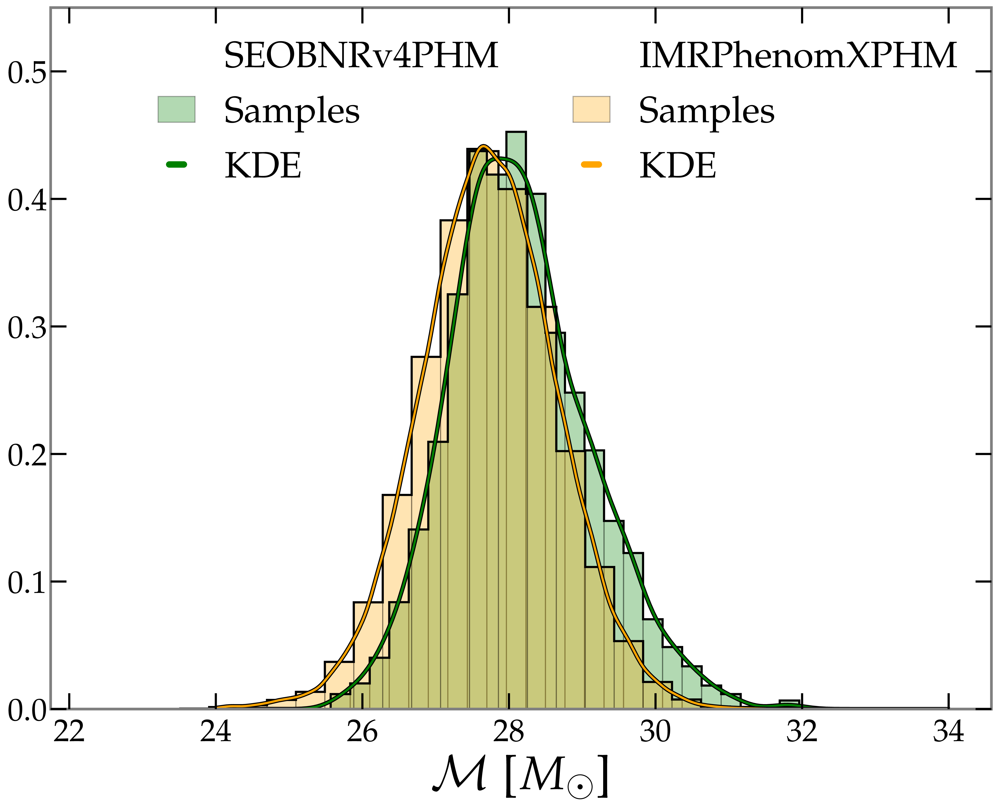

Hello there!
You are now seeing my website.
Me, that is Max Melching, currently a PhD
student at the California Institute of Technology.

You are now seeing my website.
Me, that is Max Melching, currently a PhD
student at the California Institute of Technology.
A collection of facts about me (some of them are perhaps more noteworthy than others, but that is up to you).

My career path in it (so far)
It was the first direct detection of
of gravitational waves in 2015, which was discussed
heavily in the media (especially in my hometown Hannover,
due to the Albert-Einstein-Institute
being located there), that first sparked my
interest in Physics and ultimately motivated me to study
this subject. My institution of choice
as a Hannover native was Leibniz University Hannover, where
I obtained both my Bachelor's and Master's degrees in Physics.
Over the course of my studies, I leaned more and more towards
the computational side of physics, enjoying programming and
data analysis/statistics a lot.
As part of these degrees, I spent a total of about two wonderful years
working on my Bachelor's and Master's theses in Frank Ohme's group
at the Albert-Einstein-Institute in Hannover
(for me personally, that was a really nice full-circle moment).
Finding this group was truly a blessing, as I got to meet incredibly
nice people and work on the intersection of gravitational-wave physics
and data analysis.
While still working on my Master's thesis, I received the great news
that I had been accepted for a PhD position at Caltech,
which I started in fall 2025. This is the perfect place for me to
continue pursuing my interest in (gravitational-wave) physics
and I am still incredibly grateful for this opportunity.
What I do apart from science
In my free time, I like to spend time working out,
running, or playing football (the one also known as soccer).
I also love to watch all kinds of sports and
definitely spend too much time on Fantasy Football.
Besides that I enjoy photography, my favorite subject
being landscapes (currently,
I am the proud owner of a Fujifilm X-T30).
Moreover, I love to create plots that visualize my
research or simply look cool. If you are interested,
just checkout my GitHub, for example the
gwbar,
gwtheme,
gwframes,
and minkowski_diagram
repos.